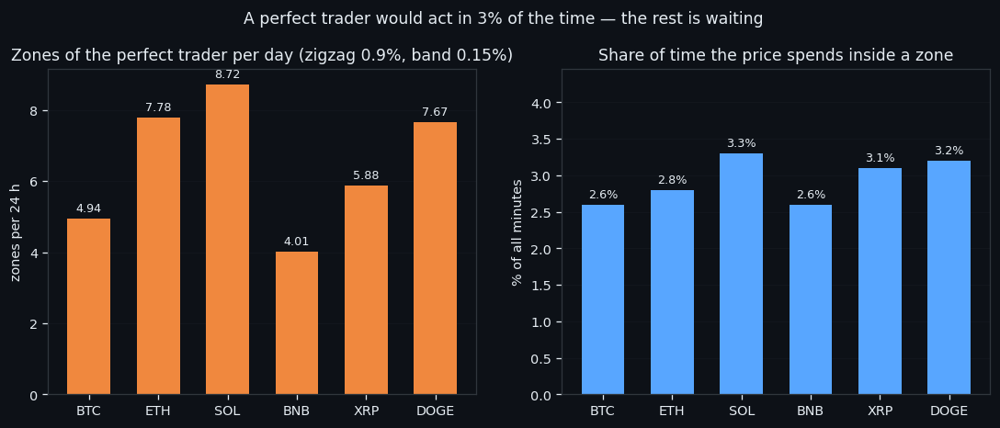
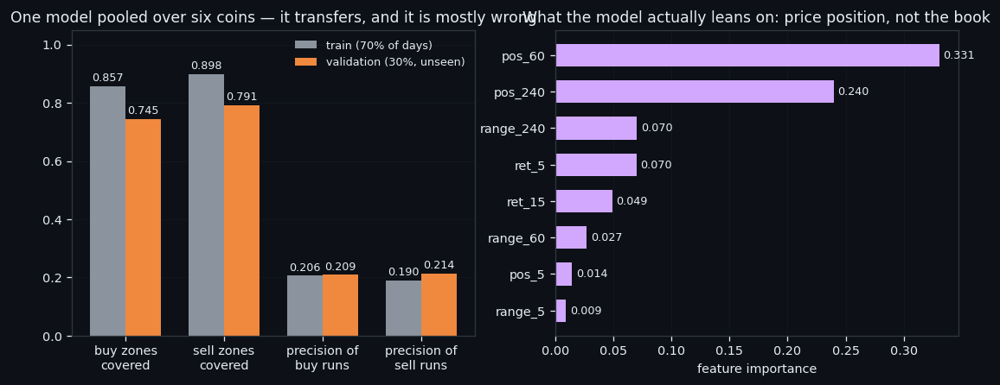
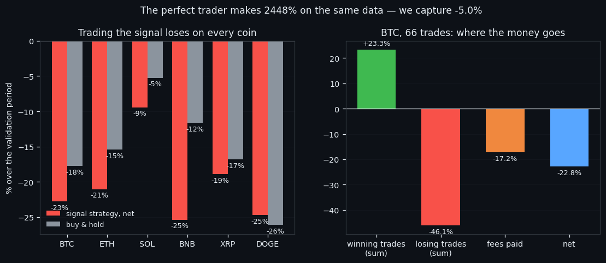

Typhoon+: A Signal That Finds the Perfect Trader's Zones — and Still Loses Money
We drew the zones a perfect trader would use — 0.9% zigzag turns, a 0.15% band around each one — and found that the price sits inside them barely 3% of the time. A single gradient-boosting model, pooled over six coins, then finds 74% of those zones on days it never saw. It also fires false 86% of the time, leans mostly on price geometry rather than the order book, and loses 122% when traded plainly against 93% for buy & hold. This is the article about a signal that finds the right places and still cannot pay the fee.
① The zones a perfect trader would use
Start from the answer instead of the model. If a trader knew the future, where exactly would they act? Not everywhere — a perfect trader touches the market only at turns, and spends the rest of the time doing nothing. So we drew those places first and only then asked whether the order book can see them.
A zone is built in two steps on 60-second bars. First a zigzag with a 0.9% threshold marks every turn where the price reversed by at least that much. Then, around each turn, we take the continuous stretch of bars whose price stays within 0.15% of the extreme — that stretch is the zone, the window inside which acting is as good as acting exactly at the turn. Neighbouring zones are kept at least 0.6% apart in price, so two zones can never be the same event counted twice.
The result is the first honest number of this line: 5,326 zones across six coins, between 4.0 (BNB) and 8.7 (SOL) per day, and the price sits inside a zone only **2.6 – 3.3% of the time**. Roughly 97% of all minutes are, for a perfect trader, waiting.
That waiting has a price tag. On BTC alone the perfect trader takes 196 trades over the validation period — 4.47 a day — on moves averaging 2.00%, netting 1.436% per trade after fees, or 6.42% a day. Across six coins the perfect trader finishes the same period at 2448%. That is the ceiling this line is measured against — not a benchmark we expect to reach, but the yardstick that turns "the signal looks good" into a number.

② One model, six coins, four wrong calls in five
One model for all six coins, not six models. The training pool mixes every coin's bars, the split is chronological — **the first 70% of days train, the last 30% validate** and are never seen during training — and the engine is gradient boosting. The signal fires when the model's score passes a threshold picked on train alone: τ = 0.87 for buy zones, 0.85 for sell zones.
It transfers. On unseen days the signal still covers **74.5% of buy zones and 79.1% of sell zones**, against 85.7% / 89.8% on train. A drop, but not a collapse: what the model learned about one coin's turns is not coin-specific folklore.
And now the number that decides everything. Of all the signal runs it produces on unseen days, 86.2% are false — they fire where no zone was. Precision of a run is 0.209 for buys and 0.214 for sells. Read the two facts together: the signal finds most of the real turns and four out of five of its calls are wrong. It is a wide net, not a scalpel.
There is a second, less comfortable finding in the feature importances. The top inputs are `pos_60` (0.331) and `pos_240` (0.240) — where the current price sits inside its own range over the last hour and last four hours — with `range_240` and `ret_5` behind them. Price geometry accounts for about 84% of the model's attention. The order-book features are in the input and they are not what the model leans on. A model that mostly says "the price is near the edge of its recent range" is a useful zone finder and a weak claim about the book.

③ Trading it: −122% against −93% for buy & hold
A zone finder is not a trading system, and this is where the line stops being flattering. The rule we tested is the plainest one that follows from the signal: enter on the onset of a signal run confirmed by 2 bars, exit on the first opposite run or at the end of the session, 42-hour sessions, at most 12 trades a day — the project's standard.
On unseen days, over six coins: **-122.3% net against -93.0% for buy & hold**. Positive on 0 of 6 coins, better than buy & hold on 1 of 6. Capture of the perfect trader's result: -5.0% — not a fraction of the ceiling, the wrong side of zero.
BTC shows where the money goes. 66 trades, 1.51 a day, median holding 230 minutes, win rate 53% — more winners than losers. And still:
| component | BTC, % over the period | |---|---| | winning trades | +23.3 | | losing trades | -46.1 | | fees paid | −17.2 | | net | -22.8 |
Gross per trade is -0.085% — before any fee at all — and net is -0.345%. That ordering matters. The fee is not what turns a winning rule into a losing one here; the rule has no edge to begin with, and the fee then triples the loss. Winning more often than losing is not the same as winning: the losers are simply bigger. (The fee in this test is 0.13% per action, the tariff at the time; the project's current standard is 0.15%, which makes this worse, not better.)
Three things carry forward from this line, and all three shaped the bots we run now. A signal that finds turns is not a signal that pays for them — coverage and profit are different measurements. Anything that fires often must be gated, which is the subject of its own article. And the perfect-trader ceiling is the most useful number we built here: it turns "our strategy is down 5%" into "we captured −5% of what was there", which is a sentence you can act on.

If this changed how you read the tape, the natural next step is Volume Is the Fuel — Not the Steering Wheel — We recorded the Binance order book every second for six coins over five months and ran eighteen tests on what volume really does.
Volume Is the Fuel — Not the Steering Wheel
We recorded the Binance order book every second for six coins over five months and ran eighteen tests on what volume really does.
About Market Research Lab — What We Collect and Why
Most market commentary is storytelling.
From Calm to Calm: a Standard for What Counts as a Signal (BTC)
We stopped defining market signals with a stopwatch.
The Wall That Goes Quiet: What Resting Liquidity Predicts
We measured resting limit liquidity sitting on both sides of the book second by second across six coins, and asked the only question that matters:….
Comments
Discussion is powered by GitHub. Enable it by adding secrets/giscus.json (repo IDs from giscus.app).